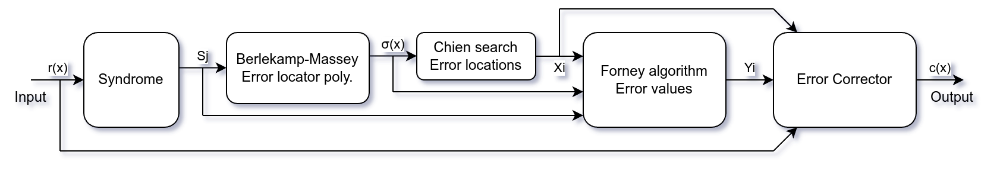
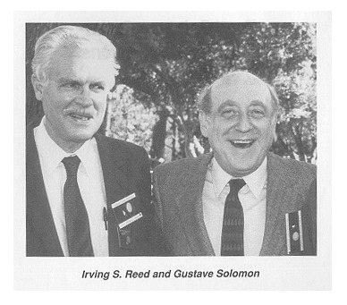

Reed-Solomon Error Correction Codes
There are two views of Reed-Solomon codes, Original view and BCH view, make sure which view you are reading about.
It seems to me, BCH view is most common used (QR codes, CD/DVD, FEC in communications like DVB or 100GbE), and can do both erasure and error corrections. Original view is mainly used for erasure codes in (distributed) storage systems.
| Original view | BCH view | |||
|---|---|---|---|---|
| Message | As coefficients of polynomial | |||
| Codeword | As values of at | As coefficients of polynomial | ||
| Characteristic | Vandermonde matrix | Generator polynomial | ||
| Usuall small, for erasure codes in storage systems | , usually | |||
| Basic encoding | ||||
| Systematic encoding | ||||
| Implementation | More memory for or | linear feedback shift register (LFSR) | ||
| Erasure decoding | Inverse of matrix | Forney algorithm | ||
| Error correction decoding | Berlekamp-Welch (1983), Shuhong Gao (2002) | PGZ (1960), Berlekamp-Massey (1967) | ||
Reed-Solomon error correction in Python


https://github.com/chenshuo/notes/blob/master/notebooks/ReedSolomonErasureCodes.ipynb
Reference
Tutorials
Starts here
- "Practical Reed-Solomon for Programmers" https://berthub.eu/articles/posts/reed-solomon-for-programmers/ (BCH view)
- https://www.akalin.com/intro-erasure-codes (Original view)
Polynomial visualize
- "Reed-Solomon Error Correcting Codes from the Bottom Up" https://tomverbeure.github.io/2022/08/07/Reed-Solomon.html
- "Introduction to Reed-Solomon" https://innovation.vivint.com/introduction-to-reed-solomon-bc264d0794f8
Finite Field
- "Finite Field Arithmetic and Reed-Solomon Coding" https://research.swtch.com/field (BCH view)
- "The mathematics of RAID-6" https://www.kernel.org/pub/linux/kernel/people/hpa/raid6.pdf (Finite Field Arithmetic)
Error correction decoding in BCH view
- Reed–Solomon codes for coders (BCH view with Python code)
- https://downloads.bbc.co.uk/rd/pubs/whp/whp-pdf-files/WHP031.pdf (BCH view)
- https://www.nayuki.io/page/reed-solomon-error-correcting-code-decoder (BCH view, PGZ decoder)
Erasure decoding in original view
- Erasure Codes for Storage Applications https://web.eecs.utk.edu/~jplank/plank/papers/FAST-2005.pdf
- Tutorial: Erasure Coding for Storage Applications https://web.eecs.utk.edu/~jplank/plank/papers/FAST-2013-Tutorial.html
- All About Erasure Codes by James Plank https://web.eecs.utk.edu/~jplank/plank/classes/cs560/560/notes/Erasure/2004-ICL.pdf
Videos
- vcubingx - What are Reed-Solomon Codes?
- Isabel Vogt - Error Correcting Curves - Numberphile
- Mary Wootters - Lecture 4: Reed-Solomon Codes! of Stanford CS250/EE387: Algebraic Error Correcting Codes
Course notes
- Stanford CS250/EE387: Algebraic Error Correcting Codes https://web.stanford.edu/class/cs250/
- Berkeley CS 294-226: Advances in Error-Correcting Codes https://people.eecs.berkeley.edu/~venkatg/teaching/ECC-fall22/
- MIT 6.451: Principles Of Digital Communication II https://ocw.mit.edu/courses/6-451-principles-of-digital-communication-ii-spring-2005/resources/mit6_451s05_fulllecnotes/
Open source
Original view (Vandermonde Reed-Solomon)
-
James S. Plank: A Tutorial on Reed-Solomon Coding for Fault-Tolerance in RAID-like Systems, SPE97 paper and correction 2003.
-
Luigi Rizzo: Software FEC in computer communications, RFC 5510
- JavaReedSolomon by Backblaze.
- Python pyfinite package.
BCH view
- Error Correcting Codes (ECC) Page by Robert Morelos-Zaragoza.
- FEC Library by Phil Karn, KA9Q.
- Adapted into Linux kernel 2.6.10 by Thomas Gleixner.
- Russ Cox blog Finite Field Arithmetic and Reed-Solomon Coding with source code in Go.
- Python galois package.
History and People

- https://en.wikipedia.org/wiki/Irving_S._Reed
- https://en.wikipedia.org/wiki/Gustave_Solomon
- https://en.wikipedia.org/wiki/Elwyn_Berlekamp
- https://en.wikipedia.org/wiki/James_Massey
- https://en.wikipedia.org/wiki/Lloyd_R._Welch
- https://en.wikipedia.org/wiki/Robert_Tienwen_Chien
- https://en.wikipedia.org/wiki/Dave_Forney